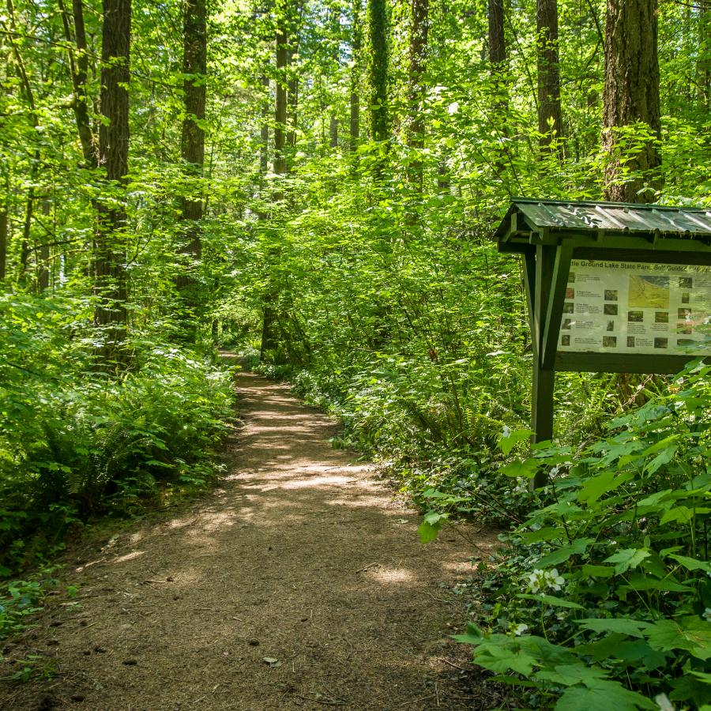

As you can see you can catch big fish out of this lake when they
are stalked.
There are other activities you can do as well aside from fishing,
such as hiking or horseback riding. To the right is a photo of part
of the trail.
